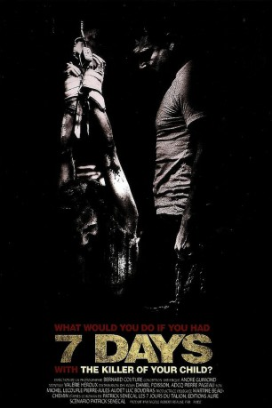

#6175 7 Days
Alternativ: Seven Days
 
 IMDB-Wertung: 6.5 / 10
IMDB-Wertung: 6.5 / 10  Metascore: 0
Metascore: 0 
Wie weit gehst du, wenn jemand deinem Kind Leid zufügt? Diese Frage stellt sich auch Bruno Hamel, als er am Grab seiner Tochter steht. In seiner Trauer kann die Antwort auf diese Frage nur lauten: Über alle Grenzen hinweg! Er fasst den Plan den Mörder seiner Tochter zu kidnappen und ihn sieben Tage für seine Tat büßen und leiden zu lassen. Sieben Tage Folter. Sieben Tage Terror. Sieben Tage, in denen das Opfer zum Täter und der Täter zum Opfer wird.
Jahr: 2010
Dauer: 110 Minuten
FSK: 18
Land: Kanada Studio: I-On New MediaTonspuren:
Untertitel: Deutsch,
Auflösung: 720p (1280x544) Größe: 2437 MB
Genre: Thriller, Horror, Drama, Krimi
Regisseur: Daniel Grou
Drehbuch: Charles Fuller
Soundtrack:
Darsteller:
- Claude Legault als Bruno Hamel
- Rémy Girard als Hervé Mercure
- Martin Dubreuil als Anthony Lemaire
- Fanny Mallette als Sylvie Bérubé
- Alexandre Goyette als Boisvert
 Mike Chute als Policier Dan
Mike Chute als Policier Dan Gerardo Lo Dico als Policier Sainte-Julie
Gerardo Lo Dico als Policier Sainte-Julie- Rose-Marie Coallier als Jasmine Hamel
- Dominique Quesnel als Maryse Pleau
- Pascale Delhaes als Diane Masson
- Pascal Contamine als Morin
- Daniel Desputeau als Gilles Médecin
- Maxime Bessette als Jeune rocker
- Valérie Gervais-Lillo als Caissière essence
- Isabelle Page als Lectrice de nouvelles
- Maxime Allard als Journaliste Fafard
- Garry Gagnon als Caméraman Fafard
- Michel-André Cardin als Journaliste chalet
- Vlace Samar als Frédéric 8 ans
- Nicolas Ross als Raph 8 ans
- Jean-François Boudreau als père Laurie
- Amélie Chérubin-Soulières als mère Laurie
- Yves Bélanger als Père de Marion
- Marika Lhoumeau als mère de Marion
- Olivier Fichaud-Ladouceur als Tueur dépanneur
- Léa-Marie Cantin als femme de Mercure
- Mathieu Desjardins als Caissier dépanneur
- Lisette Guertin als Infirmière opération
- Bruce Lee Valcint als Anesthésiste
- Henri Farmer als Enquêteur
- Alexis Lefebvre als policier Rick
- Patrice Dussault als Policier Bolduc
- Claude Despins als Policier Coutu
- Benoit St-Hilaire als Policier Tim
- Dirodel Thremidor als Policier arrestation
- Catia Cisca als Policière arrestation
- Emilie Deslandes als Policier boulevard
- Filip Pekachi als Policier boulevard
- Freddy Bessa als Policier maison
- Patrice Talbot als Policier maison
- Yanik Boisvert als Policier terrain
- Pascal Richard als Policier terrain
- Steve Horvath als Policier terrain
- Martin Roberts als Policier Sainte-Julie
- Steeve Abel als Policier Sainte-Julie
- Stéphane Dufault als Policier Saint-Julie
- Olivier Lapointe als Policier Sainte-Julie
- Sany Delagrave als Policier chalet
- Maurice Demers als Policier chalet
- André Paradis als Policier chalet
Datei: X:\FSK18-2010\7 Days (2010, FSK18, 1280x544).mkv seit 10.05.2017
Festplatte: FSK18
 Es gibt insgesamt 35 Filme in der Gruppe 'FSK18-2010'
Es gibt insgesamt 35 Filme in der Gruppe 'FSK18-2010'